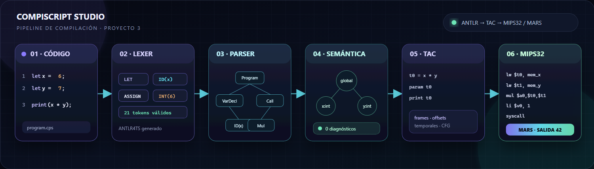

Daniel-Barillas · Sección 10
De Compiscript a
MIPS32 ejecutable
ANTLR, semántica, TAC, registros de activación, backend y validación real en MARS 4.5.
Pablo Daniel Barillas MorenoCarné 22193v3.0.0

ANTLR, semántica, TAC, registros de activación, backend y validación real en MARS 4.5.

El backend no recompila desde texto ni desde el CST. Recibe el resultado tipado del Proyecto 2 y selecciona instrucciones MIPS.
TacGenerationResult.asm observable y exportableerrores requeridos para generar MIPS
estados explícitos de la fase
artefacto final: .asm
# TAC t0 = b * 4 t1 = a + t0 resultado = t1 print resultado
# MIPS32 lw $t0, mem_b li $t1, 4 mul $t2, $t0, $t1 sw $t2, mem_t0 ... li $v0, 1 syscall
Los metadatos de tipo eligen ALU entera, coprocesador flotante, puntero o runtime de cadenas.
Reserva, guarda estado, fija $fp y copia argumentos.
Restaura $s7, $ra y $fp, libera el frame y ejecuta jr $ra.
pool administrado por getReg
soporte y punteros de función
spills observados en la suite
Cada instrucción TAC libera sus registros locales. Los valores vivos entre bloques se guardan en el frame, evitando depender de registros volátiles.
Longitud en word 0; elementos desde word 1.
4 * (i + 1)Tamaño y offsets definidos por ClassLayout.
GET_FIELD / SET_FIELDPuntero de función + capturas; $s7 apunta al entorno.
jalr $t9.asciiz, concatenación y comparación byte a byte.
l.s, s.s, add.s y promoción con cvt.s.w.
| Patrón | Acción | Seguridad |
|---|---|---|
move $r, $r | eliminar | no cambia estado |
addiu $sp,$sp,0 | eliminar | ajuste nulo |
j L seguido de L: | eliminar salto | la etiqueta es la siguiente |
nop consecutivo | conservar uno | delay slot ya cubierto |
La mirilla se aplica al ensamblador generado y conserva la versión previa para auditoría. No agrega una fase global independiente.
.cps..asm.Antes, Entrada válida y Archivo propio se detenían en semántica. Ahora solicitan el pipeline MIPS completo.
La descarga queda deshabilitada si el backend termina en failed.
05_bloqueo_por_errores.cpsCombina errores léxicos, sintácticos y semánticos.
Múltiples diagnósticos, estado skipped, ensamblador vacío y ninguna exportación inválida.
pruebas aprobadas localmente
casos MARS exigidos por CI
vulnerabilidades npm
| Caso | Salida | Cubre |
|---|---|---|
| factorial | 120 | recursión y frames |
| programa integral | 2, 6, 12 | clase, método, llamadas anidadas |
| try/catch | mensaje capturado | unwinding y restauración |
| strings | Hola MIPS / true | runtime auxiliar |
Compiscript llega desde caracteres hasta MIPS32 real. Los estados impiden artefactos inválidos. La pila soporta llamadas y recursión, el heap cubre datos compuestos y MARS confirma el comportamiento.
13_programa_integral.cps → MIPS → salida 2, 6, 12.